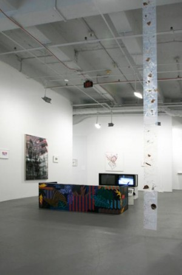

-
not so autonomous maybe: 179 Canal at White Columns
by Zak Kitnick November 10, 2010
The press release for ‘179 Canal/Anyways’ at White Columns explains that “the space (179 Canal) is currently a mahjong parlor and the project (179 Canal) is here…” Where there were decorative marble floors, uneven stucco walls, and crystal chandeliers now there is concrete, sheetrock and florescent as some of those artists who inhabited 179 make the graceful transition to White Columns. But the work seems comfortable in this environment; as if it had entertained the idea of being here or somewhere like it all along. Most things don’t stay in one place for a long time in New York, not without ‘ownership’, and with the exception of a couch, most of the work here could physically fit in a cab.
What’s more interesting is how these things happen, how they end, and where things go when it’s over. The exhibition is careful to call itself “a look here now” but it can’t help feeling a bit like a eulogy. Theme-less but not without visible affinities, for the most part the work is smart, sometimes serious. Often playful but not without rigor. Sometimes surprisingly refined for coming from an experimental artists’ space. But one gets the impression that these are people who care about what they’re doing. ‘179 Canal/ Anyways’ feels a little like an art equivalent of the culinary saying, “Eat Local, Think Global” with an emphasis on immediate surroundings (in the case of the earlier location, sometimes working in the studios directly above the space or on the street below), but while still addressing real issues and contributing to a discourse. In the creation of a space that extends beyond the physical place, in a community, there are standouts, and 179 is no exception.
Andrei Koschmieder’s Bait N Gate, a long white zipper hung vertically on the wall was purchased at the zipper store around the corner on Canal and Allan. Hanging above a small, swirling pool of partially transparent, partially opaque white resin with four YKK sliders, the work opens and closes multiple times. The front of the zipper faces the wall, so, by this logic, we are inside. Andrei writes, in an email, “Michael Sanchez mentioned Lynda Benglis when he came over once and saw the puddles… the black ones. The zipper and puddle (white) are more dependent on the surrounding space and walls now…not so autonomous maybe.” The white puddle seems like it has more to do with sex than say, a black puddle would. Blending into the thin strip of wall it occupies, Koschmieder’s work is nonetheless disquieting in its ambivalence. I had heard about works made directly in the gutter of Canal Street that incorporated garbage and other detritus but this one was virgin white.
Another successful play with materials is Stewart Uoo’s Girl Through Window. Composed of a disassembled chrome bathroom rack, a tiled inkjet print of the Manga character Sailor Moon, neodymium magnets and vinyl, the work feels thoughtful. The bathroom rack and vinyl curtain lend Window an anonymous domesticity. Did we catch Sailor Moon in a state of transformation, in the shower? Hung high on the wall, Uoo says, “There are many levels of surface tension that alter and suspend the image of the Sailor moon eyes. Emily Sundblad really liked the piece because she could also relate to the sailor moon image. I consider the show something of having a way at attempting to fetishize and promote a feminist position. I consider this important in my work since I’m a wannabe feminist, a Poser.” Designer magnets– one here, four there, two here— dot the image like beauty marks, simultaneously structural and decorative.
Finally Jared Madere’s Coconut Tapestry a floor-to-ceiling work made by repeating an Adobe Illustrator pattern on sheets of milky inkjet printable transparencies which are then splattered with smashed whole coconuts is trunk, tree, and fruit in one. It’s very digital and very analog. It’s not overly precious. “I like to think that the tapestries are like flowers in a home in this sense, that just like a cut flower arrangement on a dining room table would have to be swapped out every couple of days for fresh ones, the tapestries can be switched out if the coconut debris gets too funky, the dog chews on the corner or your pet parrot pisses on it, or if you just wanna to move it to a room with a different ceiling height.” There’s an openness in all three of these works they can be repositioned or remade out of readily available things. There are instructions with links to chrome bathroom racks, materials checklists, and PDF’s that outline the smashing and taping of coconut shards.
For the most part, artists represented by only one work prove to be the most interesting here. Perhaps the pressure to make one’s position known in one work rather than several was a challenge that distilled or excised less concise and communicative works. This was also true of paintings by Gregory Edwards and Trevor Shimizu. Edwards’ Stranded in the Jungle with superimposed cheetah and polka dot print felt like a marriage of urban and jungle fashion; shallow, but with an effective depth, somehow. Shimizu’s brushy Girlfriend Wants a Baby was good before I saw the title and really good after. Portraying a baby as something like a genie and sex as something like the act of rubbing a lamp; there was an absolute, almost allegorical humor. Josh Kline’s plastic-infused water in boiled Poland Spring bottles represented the opposite end of the humor spectrum.
In April I had seen the work of Anicka Yi on Canal Street, an intense combination of inflatables, Glade plug-ins, hair gel, rice flour and other ingredients that felt not only raw but alive. At White Columns, canvas textured soap cast around stretcher bars felt like nothing more than an unnecessary and played out commentary on painting. They were soap infused with something but looked simply like resin; it felt like different work by a different artist with a totally different set of concerns.
It was also strange to be greeted by a large Plexi-mounted diagram of Terence Koh’s social network, a work by Michael Caputo, and then be told in the press release that what we were looking at was a “group of artists who were tired of art about art.” The release elaborates that this group is also tired of “business as usual, and the heavy history of a past that wasn’t necessarily ours to reference.”
The danger here is in how quickly we historicize the recent past or label something as a movement. To say this is what we’ve done, this is our story, to make an official story. Inevitably we misrepresent ourselves. On one hand, what better form of history-writing than the autobiography; on the other, what more flawed form? But with a great deal of awareness and a pervasive sense of gratitude, ‘179 Canal/ Anyways’ manages to escape what seems like trap. Instead it more or less does what it claims to do, present a “loose but tight community,” a group show with an above average amount of overlaps in affinity and not in form. Crucially to its success, the show raises the question: did 179 Canal have to close in order for this White Columns’ show to happen? Does everything that enters this particular space have to die a little death before it’s acceptable? I would have liked to see this show while the original space existed concurrently. The intro could have read, “the space (179 Canal) is currently there and then project (179 Canal) is here…” Maybe then some works wouldn’t have felt like they had cleaned up their act quite so much.